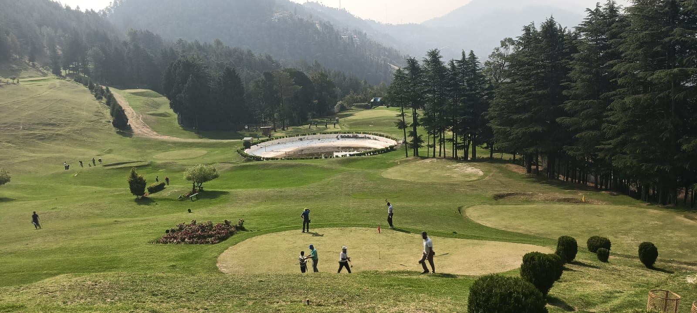
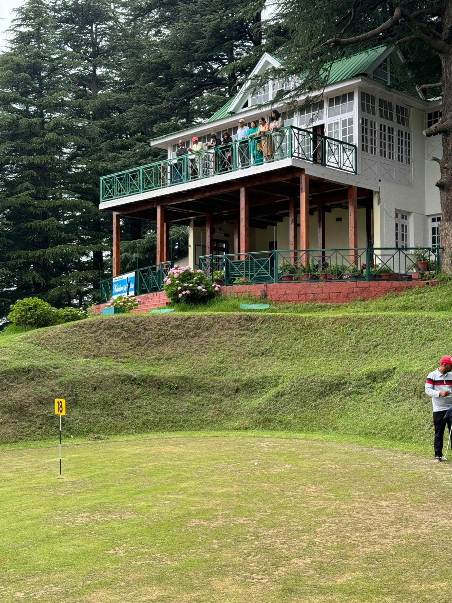
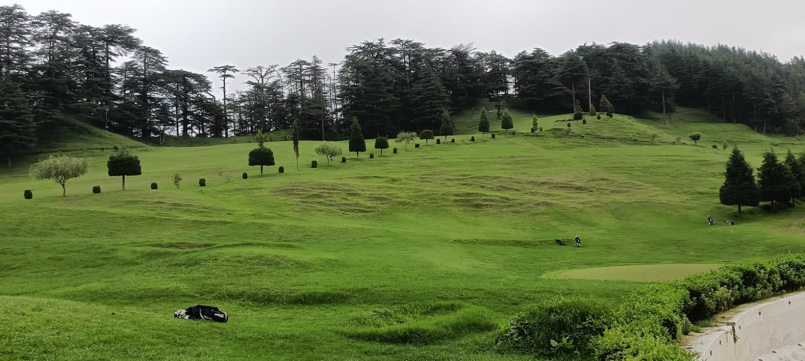
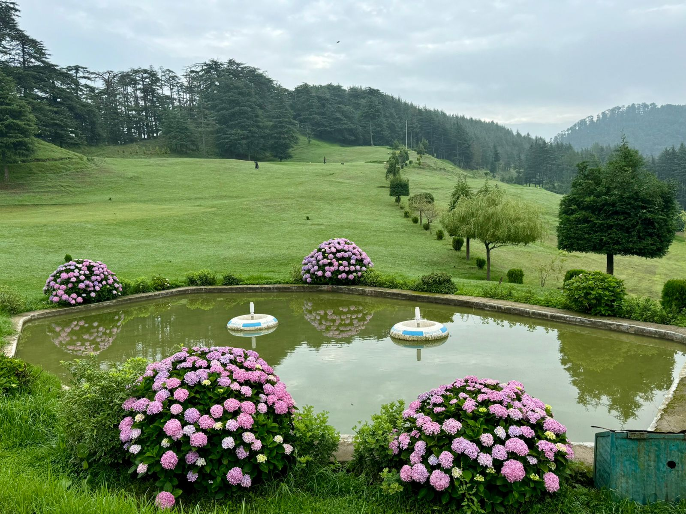
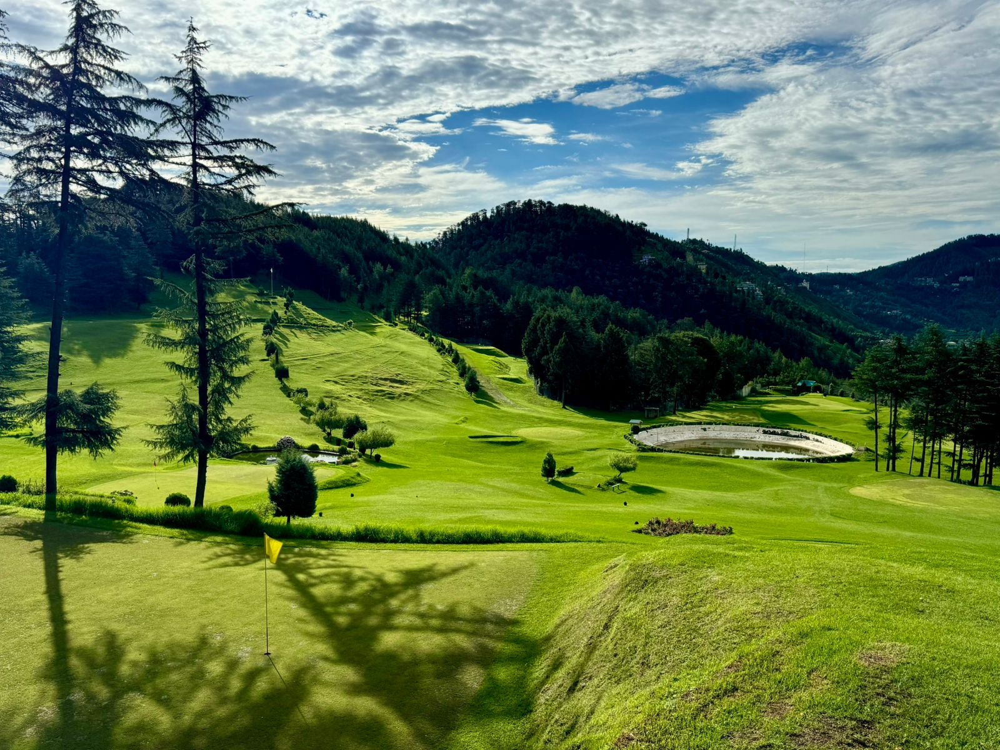
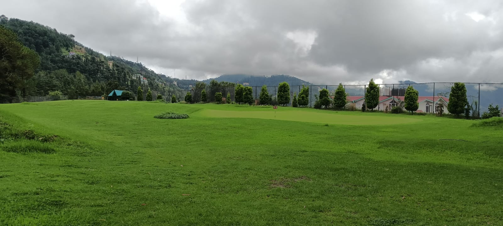

On the outskirts of Shimla, Naldehra, 23 km from the city, boasts of having one of the oldest golf courses of the country. Finding a resemblance with the sloping glades of Scotland's highlands, it was Lord Curzon, Viceroy of British India from 1899 to 1905 AD, who laid the foundation of golf course. So charmed was Curzon that he named his third daughter 'Alexandera Naldehra', after the place. Named after a local deity Nal Deo, the place has an interesting tale associated with it. Folklore has it that there was a dispute between two local gods (Devtas) about hierarchical supremacy, which led to a fight. The warring deities caused so much destruction that trees burnt down and stanes melted, before the dispute were settled. It is because of that legendary fight that Naldehra glade does not have any stone or trees and ever since has been a meadow. For over a century, practically no major changes have been made to this mountain glade nestled in a deodar groove, making the par 69, nine hole golf course as one of the most challenging ones among all courses in the country. In the repeat that makes for a complete 18 hole course, the yardage somewhat increases. With 16 greens and 18 tees, a round of golf during the rainy season from July to September, when the turf is well moisturized and the grass is softer, the curling mists make a surrealistic setting for the game. Beginners can take to basic training courses and walk in tourists with inkling for golf can avail the facilities by paying a nominal fee for the day. Stable Ford, One Club, Lucky Double and the Naldehra Open are some of the competitive events held here. The course is maintained by Himachal Tourism and accommodation near the course at Hotel Golf Glade and Log Huts is readily available. A multi cuisine restaurant near the golf course serves delicious food amidst scenic surroundings.
Historic and challenging layout.
Beautiful breathtaking mountain landscape.
Surrounded by lush greenery and and breathtaking valley views.
Challenging golfing experience and a serene Himalayan retreat just a short trip from Shimla.






📍 Golf Course (NGC), Naldehra, Shimla, Himachal Pradesh 171007
☎ +91 177 274 7656
✉ info@naldehragolfcourse.com
🕒 Open Daily: 6:00 AM – 7:00 PM